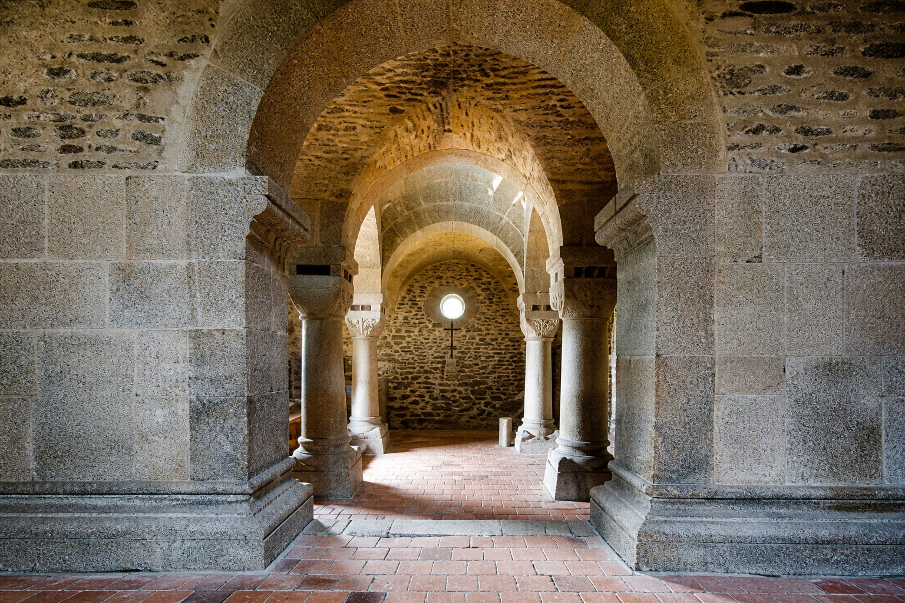

Otevření hradní kaple před sezónou s firmou Elektro Euron
Kaple sv. Erharda a Uršuly — rekonstrukce a otevření před sezónou.
Elektro Euron spol. s r.o., město Cheb a kastelán Chebského hradu zvali k prohlídce hradní kaple ještě před zahájením sezóny.
Prohlídka se konala 23. 3. 2013 od 10.00 do 16.00.
Kaple sv. Erharda a Uršuly na Chebském hradě
Elektro Euron je tu pro vás již od roku 1993. Za tu dobu jsme realizovali elektroinstalaci v mnoha projektech a objektech v Chebu i okolí — lázeňské domy, průmyslové haly, rodinné i bytové domy, školy, školky, Kulturní centrum Svoboda, autobusový terminál. V době otevření kaple jsme realizovali dílčí rekonstrukci hradní kaple (úpravu podlahy, nátěr střechy a opravu osvětlení v kapli), Černé věže a kasemat.
U této příležitosti jsme veřejnost pozvali na prohlídku hradní kaple, kde byla k vidění zbrusu nová expozice — alchymistická laboratoř chebského měšťana Zikmunda Wanna ze závěru 15. století. Pro návštěvníky bylo připraveno i malé občerstvení.